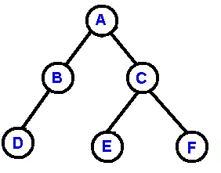
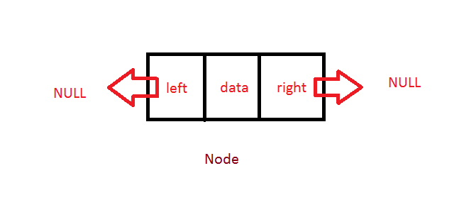
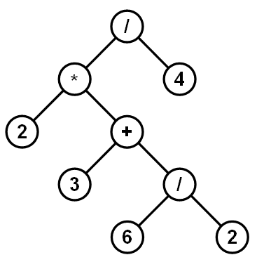

Binary tree. Source: cs.cmu.edu/~adamchik

Binary tree node.
Source: algorithms.tutorialhorizon.com
Trees
A tree is an abstract data type that stores elements hierarchically.A tree is a collection of nodes which have a parent-child relationship. A tree may be empty.
- The first node is called the root (there cannot be multiple roots).
- Each node (except the root) has exactly one parent.
- Each node has zero or more children.
Terminology
- A binary tree is a tree where every node has at most two children, a left child and a right child.
- A leaf is a node with no children.
- An internal node has one or more children.
- The ancestors of a node are the nodes reachable by repeatedly going from child to parent (including the node itself).
- The descendants of a node are the nodes reachable by repeatedly going from parent to child (including the node itself).
- A subtree is a tree that consists of a node and its descendants. In a binary tree, a node's left subtree and right subtree are the trees rooted at its left child and its right child.
- The depth of a node is the number of edges from the root to the node (the depth of the root is 0).
- The height of a tree is the number of edges in the longest path from root to leaf.

Expression tree. Source: codinghelmet.com
(2 * (3 + (6 / 2))) / 4
A tree can also be used store hierarchical data, as in a parse tree or expression tree.
Parse tree. Source: cs.cornell.edu/courses/cs2112